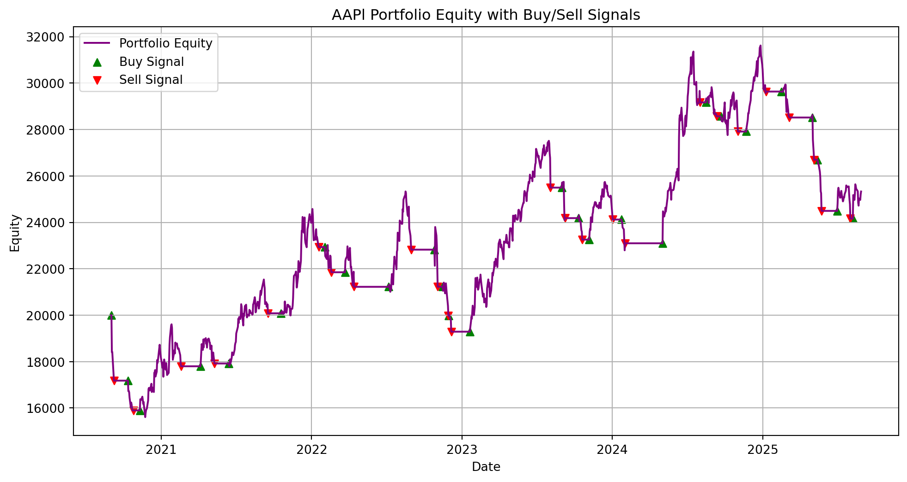
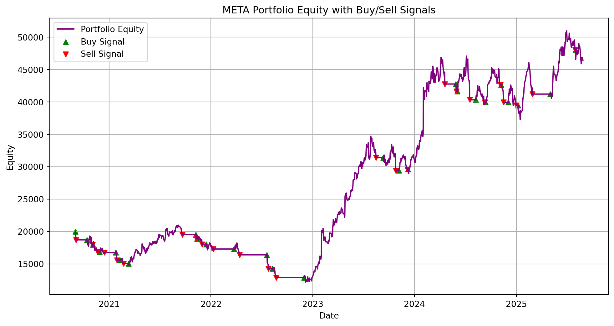
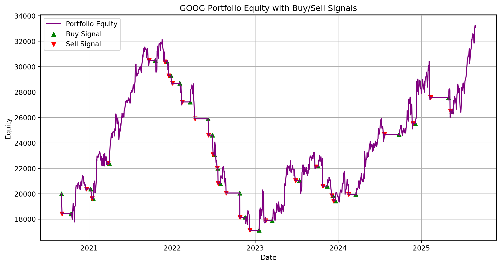
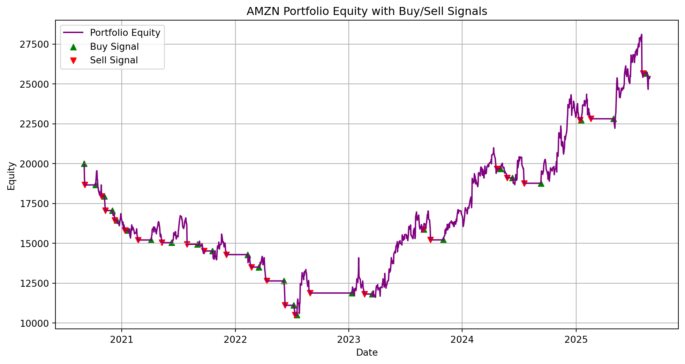
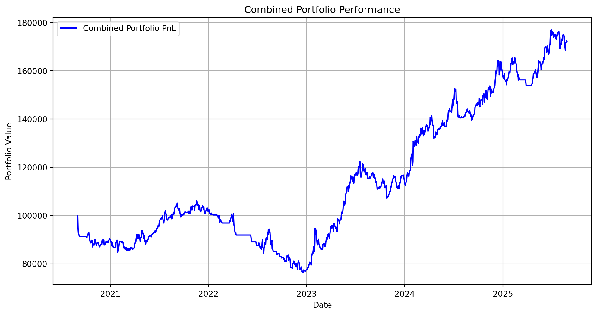

import pandas as pd
import numpy as np
import yfinance as yf
from sklearn.ensemble import RandomForestClassifier
from sklearn.preprocessing import StandardScaler
import matplotlib.pyplot as plt
# Debugging function
def debug_data(data, ticker):
print(f"\n--- Debugging Data for {ticker} ---")
print(f"Shape: {data.shape}")
print("Columns:", data.columns)
# print("\nSample Data:\n", data.head())
print("--- End Debugging ---\n")
# Function to clean and prepare data
def clean_data(data):
if isinstance(data.columns, pd.MultiIndex):
data.columns = ['_'.join(col).strip() for col in data.columns]
data = data.loc[:, ~data.columns.duplicated()]
if 'Close' not in data.columns:
close_columns = [col for col in data.columns if 'Close' in col]
if close_columns:
data['Close'] = data[close_columns[0]]
if 'Open' not in data.columns:
open_columns = [col for col in data.columns if 'Open' in col]
if open_columns:
data['Open'] = data[open_columns[0]]
if 'High' not in data.columns:
high_columns = [col for col in data.columns if 'High' in col]
if high_columns:
data['High'] = data[high_columns[0]]
if 'Volume' not in data.columns:
vol_columns = [col for col in data.columns if 'Volume' in col]
if vol_columns:
data['Volume'] = data[vol_columns[0]]
if 'Low' not in data.columns:
low_columns = [col for col in data.columns if 'Low' in col]
if low_columns:
data['Low'] = data[low_columns[0]]
for col in ['Open', 'High', 'Low', 'Close', 'Volume']:
if col not in data.columns:
print(f"Warning: '{col}' column missing, filling with 'Close' column.")
data[col] = data['Close']
return data
# Add EMAs
def add_indicators(data):
data['EMA_10'] = data['Close'].ewm(span=10, adjust=False).mean()
data['EMA_20'] = data['Close'].ewm(span=20, adjust=False).mean()
return data
# Fetch data
def fetch_data(ticker, period='5y'):
print(f"Downloading data for {ticker}...")
try:
data = yf.download(ticker, period=period, progress=False)
if data.empty:
raise ValueError(f"No data available for {ticker}")
data = clean_data(data)
# debug_data(data, ticker)
data = add_indicators(data)
data['Returns'] = data['Close'].pct_change()
data['Lagged_Returns'] = data['Returns'].shift(1)
data.dropna(inplace=True)
return data
except Exception as e:
print(f"Error fetching data for {ticker}: {e}")
return pd.DataFrame()
# Train ML model
def train_ml_model(data):
features = ['EMA_10', 'EMA_20', 'Lagged_Returns']
data['Target'] = np.where(data['EMA_10'] > data['EMA_20'], 1, 0)
X = data[features]
y = data['Target']
scaler = StandardScaler()
X_scaled = scaler.fit_transform(X)
model = RandomForestClassifier(random_state=42)
model.fit(X_scaled, y)
data['Prediction'] = model.predict(X_scaled)
return model, data
# Backtesting with cash balance
def run_backtest_with_cash(data, initial_cash):
cash_balance = initial_cash
shares_held = 0
cash_history = [initial_cash]
equity_history = [initial_cash]
buy_dates, sell_dates = [], []
for i in range(1, len(data)):
price = data['Close'].iloc[i]
signal = data['Prediction'].iloc[i]
if signal == 0 and shares_held > 0: # Sell
cash_balance += shares_held * price
shares_held = 0
sell_dates.append(data.index[i])
elif signal == 1 and shares_held == 0: # Buy
shares_held = cash_balance // price
cash_balance -= shares_held * price
buy_dates.append(data.index[i])
total_equity = cash_balance + (shares_held * price)
cash_history.append(cash_balance)
equity_history.append(total_equity)
while len(cash_history) < len(data):
cash_history.append(cash_balance)
equity_history.append(total_equity)
data['Cash_Balance'] = cash_history
data['Portfolio_Equity'] = equity_history
data['Buy_Signals'] = data.index.isin(buy_dates)
data['Sell_Signals'] = data.index.isin(sell_dates)
# print("cash_history", cash_history)
# print("equity_history", equity_history)
return data
# Metrics calculation
def calculate_metrics(data):
total_return = data['Portfolio_Equity'].iloc[-1] - data['Portfolio_Equity'].iloc[0]
total_return_pct = (data['Portfolio_Equity'].iloc[-1] / data['Portfolio_Equity'].iloc[0]) - 1
returns = data['Portfolio_Equity'].pct_change().dropna()
sharpe_ratio = returns.mean() / returns.std() * np.sqrt(252)
sortino_ratio = returns.mean() / returns[returns < 0].std() * np.sqrt(252)
best_trade = returns.max()
worst_trade = returns.min()
win_rate = len(returns[returns > 0]) / len(returns)
loss_rate = 1 - win_rate
metrics = {
"Total return": total_return,
"Total Return(%)": total_return_pct,
"Win Rate": win_rate,
"Loss Rate": loss_rate,
"Best Trade": best_trade,
"Worst Trade": worst_trade,
"Sharpe Ratio": sharpe_ratio,
"Sortino Ratio": sortino_ratio
}
return metrics
# Metrics calculation for combined portfolio
def calculate_combined_metrics(pnl_history):
total_return= (pnl_history.iloc[-1] - pnl_history.iloc[0])
total_return_pct = (pnl_history.iloc[-1] / pnl_history.iloc[0]) - 1
returns = pnl_history.pct_change().dropna()
sharpe_ratio = returns.mean() / returns.std() * np.sqrt(252)
sortino_ratio = returns.mean() / returns[returns < 0].std() * np.sqrt(252)
best_trade = returns.max()
worst_trade = returns.min()
win_return = returns[returns > 0]
loss_return = returns[returns < 0]
win_rate = len(returns[returns > 0]) / len(returns)
loss_rate = 1 - win_rate
metrics = {
"Total Return": total_return,
"Total Return(%)": total_return_pct,
"Win Rate": win_rate,
"Loss Rate": loss_rate,
"Best Trade": best_trade,
"Worst Trade": worst_trade,
"Sharpe Ratio": sharpe_ratio,
"Sortino Ratio": sortino_ratio
}
return metrics
# Print combined portfolio metrics
def print_combined_metrics(metrics):
print("\n--- Combined Portfolio Performance Metrics ---")
for key, value in metrics.items():
if isinstance(value, (int, float)):
print(f"{key}: {value:.4f}")
else:
print(f"{key}: {value}")
print("----------------------------------------------\n")
# Plot individual performance
def plot_performance(data, ticker):
plt.figure(figsize=(12, 6))
plt.plot(data.index, data['Portfolio_Equity'], label='Portfolio Equity', color='purple')
plt.scatter(data.index[data['Buy_Signals']], data['Portfolio_Equity'][data['Buy_Signals']],
color='green', marker='^', label='Buy Signal')
plt.scatter(data.index[data['Sell_Signals']], data['Portfolio_Equity'][data['Sell_Signals']],
color='red', marker='v', label='Sell Signal')
plt.title(f"{ticker} Portfolio Equity with Buy/Sell Signals")
plt.xlabel("Date")
plt.ylabel("Equity")
plt.legend()
plt.grid()
plt.show()
# Plot combined portfolio performance
def plot_combined_portfolio(pnl_history):
plt.figure(figsize=(12, 6))
plt.plot(pnl_history.index, pnl_history.values, label="Combined Portfolio PnL", color="blue")
plt.title("Combined Portfolio Performance")
plt.xlabel("Date")
plt.ylabel("Portfolio Value")
plt.legend()
plt.grid()
plt.show()
# Main Execution
if __name__ == "__main__":
portfolio = ["AAPl", "META","GOOG", "AMZN", "NFLX"]
print("Enter stock tickers for your portfolio (max 5 tickers). Type 'done' to finish.")
# while len(portfolio) < 5:
# ticker = input(f"Enter ticker {len(portfolio) + 1}: ").strip().upper()
# if ticker == 'DONE':
# break
# portfolio.append(ticker)
total_cash = 100000
cash_per_stock = total_cash / len(portfolio)
combined_pnl = None
for ticker in portfolio:
print(f"\nProcessing {ticker}...")
data = fetch_data(ticker)
if not data.empty:
_, data = train_ml_model(data)
data = run_backtest_with_cash(data, cash_per_stock)
metrics = calculate_metrics(data)
print(f"\nPerformance Metrics for {ticker}:")
for key, value in metrics.items():
print(f"{key}: {value:.4f}")
plot_performance(data, ticker)
if combined_pnl is None:
combined_pnl = data['Portfolio_Equity']
else:
combined_pnl = combined_pnl.add(data['Portfolio_Equity'], fill_value=0)
if combined_pnl is not None:
combined_pnl.index = data.index # Align combined PnL index
combined_metrics = calculate_combined_metrics(combined_pnl)
print_combined_metrics(combined_metrics)
plot_combined_portfolio(combined_pnl)
else:
print("No valid portfolio data to display.")
# display(data)Enter stock tickers for your portfolio (max 5 tickers). Type 'done' to finish.
Processing AAPl...
Downloading data for AAPl...C:\Temp\ipykernel_27288\3828830366.py:58: FutureWarning:
YF.download() has changed argument auto_adjust default to True
Performance Metrics for AAPl:
Total return: 5330.6851
Total Return(%): 0.2665
Win Rate: 0.2955
Loss Rate: 0.7045
Best Trade: 0.0754
Worst Trade: -0.0798
Sharpe Ratio: 0.3500
Sortino Ratio: 0.3878
Processing META...
Downloading data for META...C:\Temp\ipykernel_27288\3828830366.py:58: FutureWarning:
YF.download() has changed argument auto_adjust default to True
Performance Metrics for META:
Total return: 26394.5467
Total Return(%): 1.3197
Win Rate: 0.3147
Loss Rate: 0.6853
Best Trade: 0.2320
Worst Trade: -0.0759
Sharpe Ratio: 0.7388
Sortino Ratio: 1.1044
Processing GOOG...
Downloading data for GOOG...C:\Temp\ipykernel_27288\3828830366.py:58: FutureWarning:
YF.download() has changed argument auto_adjust default to True
Performance Metrics for GOOG:
Total return: 13121.3300
Total Return(%): 0.6561
Win Rate: 0.3466
Loss Rate: 0.6534
Best Trade: 0.0996
Worst Trade: -0.0962
Sharpe Ratio: 0.5552
Sortino Ratio: 0.5886
Processing AMZN...
Downloading data for AMZN...C:\Temp\ipykernel_27288\3828830366.py:58: FutureWarning:
YF.download() has changed argument auto_adjust default to True
Performance Metrics for AMZN:
Total return: 5459.7505
Total Return(%): 0.2730
Win Rate: 0.2891
Loss Rate: 0.7109
Best Trade: 0.1033
Worst Trade: -0.0838
Sharpe Ratio: 0.3277
Sortino Ratio: 0.3834
Processing NFLX...
Downloading data for NFLX...C:\Temp\ipykernel_27288\3828830366.py:58: FutureWarning:
YF.download() has changed argument auto_adjust default to True
Performance Metrics for NFLX:
Total return: 21980.0953
Total Return(%): 1.0990
Win Rate: 0.3131
Loss Rate: 0.6869
Best Trade: 0.1289
Worst Trade: -0.0901
Sharpe Ratio: 0.6872
Sortino Ratio: 0.8079
--- Combined Portfolio Performance Metrics ---
Total Return: 72286.4076
Total Return(%): 0.7229
Win Rate: 0.4768
Loss Rate: 0.5232
Best Trade: 0.0814
Worst Trade: -0.0524
Sharpe Ratio: 0.7531
Sortino Ratio: 1.0279
----------------------------------------------
